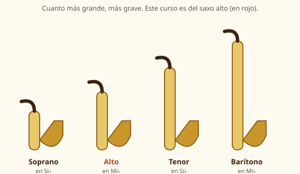
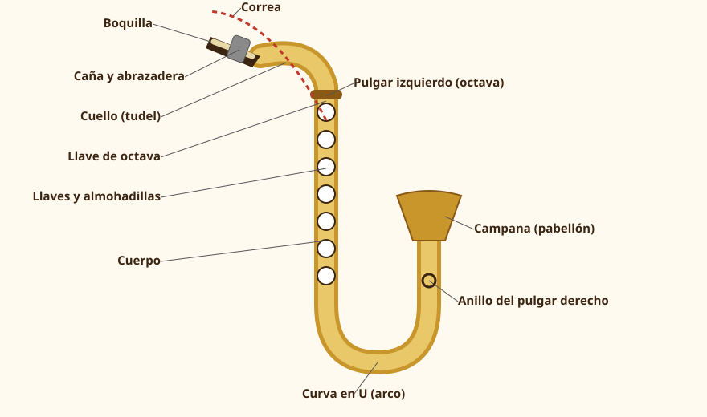

Módulo 1: Conoce tu saxo alto
Qué es, cómo funciona, qué partes tiene y qué necesitas para empezar.
El saxofón es un instrumento de viento-madera de caña simple: soplas aire, la caña vibra contra la boquilla y el tubo cónico de metal convierte esa vibración en notas. Con una sola digitación aprendida puedes tocar toda la familia.
El instrumento
1. Qué es el saxofón
Lo inventó en la década de 1840 el belga Adolphe Sax, que lo patentó en París en 1846. Quería un instrumento con la potencia de un viento-metal y la agilidad y el color de un viento-madera. Aunque su cuerpo es de metal (normalmente latón), se clasifica como viento-madera porque el sonido nace de una lengüeta —la caña— y no de los labios, como en la trompeta.
Es muy parecido al clarinete en lo que respecta al sonido (una sola caña), pero el tubo del saxo es cónico (se va ensanchando), lo que hace que, al abrir un pequeño orificio —la llave de octava—, la nota suene una octava más aguda. Esto simplifica la digitación y es una de las razones por las que el saxo se aprende con rapidez.
2. La familia del saxofón

| Saxo | Afinación | Tamaño y sonido | Se usa en… |
|---|---|---|---|
| Sopranino | Mi♭ | Muy pequeño y agudo | Orquestas y conjuntos de saxos |
| Soprano | Si♭ | Recto como un clarinete (o curvo) | Jazz, clásica, saxofón cantante |
| Alto | Mi♭ | Mediano: es el saxo más habitual para empezar | Banda, jazz, clásica, pop y rock |
| Tenor | Si♭ | Grande, sonido cálido y grave | Jazz, rock, soul, big band |
| Barítono | Mi♭ | Muy grande, sonido profundo | Big band, secciones de saxos, bajos de banda |
| Bajo | Si♭ | Gigante: muy raro | Conjuntos de saxos |
3. Partes del saxo alto

| Parte | Qué es y para qué sirve |
|---|---|
| Boquilla | Pieza (ebonita, metal o plástico) sobre la que vibra la caña. Es la «embocadura» del instrumento. |
| Caña | Lámina de caña (Arundo donax) que vibra contra la boquilla al soplar. Se gasta y hay que cambiarla. |
| Abrazadera | Anillo metálico con tornillos que sujeta la caña a la boquilla. |
| Cuello (tudel) | Tubo curvo que une la boquilla con el cuerpo. Lleva el corcho donde se encaja la boquilla y una llave de octava. |
| Cuerpo | El tubo principal, con las llaves y las almohadillas (zapatillas) que tapan los orificios. |
| Llaves y mecanismo | Palancas, varillas y resortes que cierran los orificios que tus dedos no alcanzan. |
| Llave de octava | La pulsa el pulgar izquierdo para tocar el registro agudo. |
| Arco (curva en U) | El tramo en forma de U de la parte inferior. |
| Campana | La abertura final, por la que sale el sonido. |
| Correa | Cinta que cuelga del cuello y sostiene el peso del saxo. |
| Apoyo del pulgar derecho | Gancho o anilla donde se apoya el pulgar derecho. |
4. Cómo funciona
- Soplas aire por la boquilla.
💡 Cómo se hace
el aire pasa por el estrecho espacio entre la caña y la boquilla. - La caña vibra.
💡 Cómo se hace
se abre y cierra cientos de veces por segundo, como una lengüeta. Esa vibración se convierte en una columna de aire que oscila dentro del tubo. - Los orificios y llaves cambian la longitud del tubo.
💡 Cómo se hace
cuantos más orificios cierras con los dedos, más largo es el tubo vibrante y más grave suena la nota. - La llave de octava cambia de registro.
💡 Cómo se hace
al abrir un pequeño orificio cerca del cuello, la columna de aire vibra en dos mitades y suena una octava más aguda.
5. Qué necesitas para empezar
| Material | Para qué | ¿Imprescindible? |
|---|---|---|
| Saxo alto en buen estado | El instrumento (compra o alquiler, siempre revisado) | Sí |
| Boquilla de principiante | Abertura cerrada o media, que facilita el sonido | Sí |
| Cañas (dureza 1½ a 2½) | Mejor comprar varias: se gastan | Sí |
| Abrazadera y correa | Normalmente vienen con el saxo | Sí |
| Paño de limpieza (microfibra) y escobillón | Secar y limpiar después de cada sesión | Sí |
| Grasa para corcho | Para montar el cuello y la boquilla sin forzar | Sí |
| Estuche para cañas | Guardarlas planas y protegidas | Muy recomendable |
| Atril, metrónomo y afinador | Estudiar con la partitura a la altura de los ojos y marcar el pulso | Muy recomendable |
| Protector de dientes (parche) | Protege los dientes superiores de la vibración | Recomendable |
| Un/a profesor/a | Corrige lo que tú no puedes oír ni ver | Lo más recomendable |
6. Escucha antes de tocar
Para formarte un oído y unas ganas de sonar de cierta manera, escucha a distintos saxofonistas con la partitura (o con un lápiz) en la mano: el sonido, el fraseo, cómo respiran y dónde ponen la intención.
| Estilo | Saxofonistas para empezar a escuchar |
|---|---|
| Clásica | Marcel Mule, Sigurd Raschèr, Jean-Yves Fourmeau |
| Jazz (bebop y cool) | Charlie Parker, Cannonball Adderley, Paul Desmond, Lee Konitz, Phil Woods |
| Jazz moderno y contemporáneo | Kenny Garrett, Joshua Redman (tenor), Miguel Zenón |
| Pop, soul y funk | David Sanborn, Candy Dulfer, Maceo Parker |
🧩 ¿Qué hace vibrar al saxofón para producir el sonido?
🧩 ¿En qué tonalidad está afinado el saxo alto?
🧩 ¿Por qué el saxofón se considera de viento-madera si es de metal?
🎷 Tu primera escucha
Elige un saxofonista de la tabla, escucha cinco minutos de una grabación suya y escribe tres cosas sobre su sonido (¿suave o brillante? ¿cómo respira? ¿qué te gustaría imitar?).